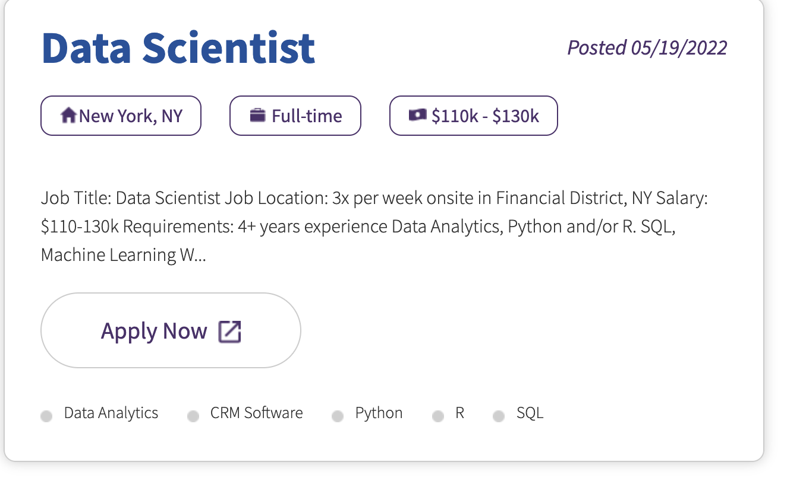

May, 2022
We’ll look CyberCoders.com for jobs. This is a more specialized site than indeed.com or monster.com and, as a result, the number of positions is much smaller. This means our work doesn’t yield as many job descriptions, yet the work for each site is about the same.
We’ll be using the RCurl and XML packages to make HTTPS requests and parsing the HTML documents, respectively. You can use which ever equivalent packages you want.
library(RCurl)
library(XML)In our Web browser, we go to https://www.cybercoders.com and entere Data Scientist as a query. This brings us to the URL
u = "https://www.cybercoders.com/search/?searchterms=Data+Scientist&searchlocation=&newsearch=true&originalsearch=true&sorttype="We’ll do the same thing but programmatically in R. The URL u has
& character,? characterThe parameters are part of a HTTPS GET request as part of a ‘form’.
We’ll create a connection that can be used in multiple queries. and we’ll have it follow redirects and also not concern itself with checking SSL certificates. We should fix this but we won’t focus on that now.
BaseURL = "https://www.cybercoders.com/search/"
con = getCurlHandle(followlocation = TRUE, ssl.verifypeer = FALSE)Note that the final / on the BaseURL value is essential later in calls to getRelativeURL().
tt = getForm(BaseURL, searchterms = "Data Scientist",
searchlocation = "", newsearch = "true", originalsearch = "true", sorttype = "",
curl = con)
nchar(tt)Looking for the first question, we see it as a descendant of a node
<div class="job-listing-item">There is also a div with a class of “job-listing-container”. There is only one of these.
doc = htmlParse(tt)
j = getNodeSet(doc, "//div[@class = 'job-listing-container']")
length(j)Let’s count the job-listing-item nodes.
j = getNodeSet(doc, "//div[@class = 'job-listing-item']")How many jobs are there on this page? length(j).
In the Web browser, we see that the page says 24 jobs. However, we have 21. Scrolling to the bottom of the page, we see a button for the next page of results.
There are 4 on that page. Why do we have 25 in total? There appears to be one “job” in the list that is an advertisement for cybercoders.com itself.
It appears to be the fifth one on the first page. Looking at this node - j[[5]] -, we see that it is this advertisement/signup.
We need to ignore this one when processing the job summaries. It appears this one has no job-title node. So we can add this to our XPath query when looking for the job nodes
j = getNodeSet(doc, "//div[@class = 'job-listing-item' and .//div[@class = 'job-title']]")So we seem to have 20 real posts on the first page and 4 on the next.
How do we get the next page?
The next button and the page number buttons look like

It is hard to search for 1 or 2 or the > image. We can mouse over one of the buttons and see what the link is in the Web browser’s status bar at the bottom of the window. Also we can right-click on one of the buttons and Copy Link into the clipboard and then examine it
https://www.cybercoders.com/search/?page=2&searchterms=Data%20Scientist&searchlocation=&newsearch=true&originalsearch=true&sorttype=So now we know what we are looking for, although the domain part may not be in the HTML, i.e. the https://www.cybercoders.com/search/.
So let’s look an <a> node with a href attribute that contains page=2. We can do this in the text editor or with XPath
nx = getNodeSet(doc, "//a[contains(@href, 'page=2')]")We get 3 matching nodes. One is for the 2 button, another for the » button and third with the label Next for the button. This Next doesn’t seem to appear on the page.
We could explore why it doesn’t appear, but the key is that all three of these nodes have the same value for the href attribute. That is because there are only 2 pages. We want the one for the » or Next as that is the next page.
nx = getNodeSet(doc, "//a[. = 'Next']/@href")
next.url = getRelativeURL(nx[[1]], BaseURL) # the final / is important.Let’s fetch this and find the 4 job postings
p2 = getURLContent(next.url , ssl.verifypeer = FALSE)doc2 = htmlParse(p2)
j2 = getNodeSet(doc2, "//div[@class = 'job-listing-item']")We only get 3 posts. Is this because
Regardless, we have the jobs on the second pages.
Now that we have found these posts, we want to extract the information from each of these and also the full description for each post.
Each post looks something like

We want the
The node is
<div class="job-listing-item">
<div class="job-title">
<a href="/data-scientist-job-639658">Data Scientist</a>
</div>
<div class="job-posted posted"><span>Posted</span> 05/19/2022</div>
<div class="details">
<div class="location"><span class="ico-house"/>New York, NY</div>
<div class="salary-type"><span class="ico-briefcase"/> Full-time</div>
<div class="salary"><span class="ico-money"/> $110k - $130k</div>
</div>
<div class="description">Job Title: Data Scientist Job Location: 3x per week onsite in Financial District, NY Salary: $110-130k Requirements: 4+ years experience Data Analytics, Python and/or R. SQL, Machine Learning W...</div>
<a href="/data-scientist-job-639658" class="apply-button">Apply Now <span class="apply"/></a>
<div class="skills">
<ul class="skill-list"><li class="skill-item">
<a href="/search/data-analytics-skills/">
<span class="left-off"/>
<span class="skill-name">Data Analytics</span>
<span class="right"/>
</a>
</li>
<li class="skill-item">
<a href="/search/crm-software-skills/">
<span class="left-off"/>
<span class="skill-name">CRM Software</span>
<span class="right"/>
</a>
</li>
<li class="skill-item">
<a href="/search/python-skills/">
<span class="left-off"/>
<span class="skill-name">Python</span>
<span class="right"/>
</a>
</li>
<li class="skill-item">
<a href="/search/r-skills/">
<span class="left-off"/>
<span class="skill-name">R</span>
<span class="right"/>
</a>
</li>
<li class="skill-item">
<a href="/search/sql-skills/">
<span class="left-off"/>
<span class="skill-name">SQL</span>
<span class="right"/>
</a>
</li>
</ul></div>
</div> We want the title This is the text in the <a> node within the <div class=“job-title”> (The is an entity that represents a new line.)
a = getNodeSet(node, ".//div[@class='job-title']/a")Note the . at the start of the XPath expression. This is essential so that we search the descendants of this node and not the etire document in which the node is located.
a is a list with one element, the node of interest. We didn’t subset it directly as we typically have to check it has a positive length, in case there was no such matching node.
We want the the text within this node and we use xmlValue()
title = xmlValue(a[[1]])We also want the URL for the full description and this is the href attribute of this <a> node.
full = xmlGetAttr(a[[1]], "href")We need to use getRelativeURL() again to get the full URL.
full = getRelativeURL(full, BaseURL)The date the job was posted is in
<div class="job-posted posted"><span>Posted</span> 05/19/2022</div> We want the text node directly under the <div>, not the one in the <span>
date = xpathSApply(node, ".//div[starts-with(@class, 'job-posted')]/text()", xmlValue)We may have to be more general with other job postings as this may not be the class.
We can check this quickly on all
pt = getNodeSet(doc, "//div[starts-with(@class, 'job-posted')]")There are 20 as we hoped.
xpathSApply(doc, "//div[starts-with(@class, 'job-posted')]", xmlValue)So all of these also have Posted in the text.
The skills/job characteristics such as R, SQL are in sub-nodes
<li class="skill-item">
<a href="/search/python-skills/">
<span class="left-off"/>
<span class="skill-name">Python</span>
<span class="right"/>
</a>
</li>So we can get the span with a class skill-name
skills = xpathSApply(node, ".//span[@class = 'skill-name']", xmlValue)Here we want the
<div class="location"><span class="ico-house"/>New York, NY</div> We get it with
loc = xpathSApply(node, ".//div[@class='location']", xmlValue)salary = xpathSApply(node, ".//div[@class='salary']", xmlValue)salaryType = xpathSApply(node, ".//div[@class='salary-type']", xmlValue)Some of these are similar we could write a general function to each one and sapply that, e.g.,
lapply(c("salary", "salary-type", "location"),
function(k)
xpathSApply(node, sprintf(".//div[@class='%s']", k), xmlValue))We’ll look at a specific job’s detailed post:
Parts of this are repeated from the summary description on the results page. These are the more structured/regular content on the page. The other information is more free-form and semi-structured. It has some structure as humans are reading it so there are
The lists may be explicit HTML <ul>/<li> elements, or as in this case, text that have explicit line breaks (<br/>.) So this will not be as straightforward to read.
We fetch the page’s contents and parse the HTML:
u = "https://www.cybercoders.com/data-scientist-job-639658"
tt = getURLContent(u, ssl.verifypeer = FALSE)
doc = htmlParse(tt)We can look for explicit header elements. In HTML, these are H1, H2, …, H6. We can use XPath to find any of these with
h = getNodeSet(doc, "//h1|//h2|//h3|//h4|//h5|//h6")There are 9 of these nodes.
table(sapply(h, xmlName))h1 h3 h4
1 5 3 We can learn how these are used in this post, but this may not generalize to other job posts.
h[sapply(h, xmlName) == "h4"][[1]]
<h4 class="section-title">What You Will Be Doing</h4>
[[2]]
<h4 class="section-title">What You Need for this Position</h4>
[[3]]
<h4 class="section-title">Preferred Skills</h4> These are the different sections related to the job.
The H3 nodes are CyberCoders’ own generic elements not specific to this job description. We may be able to use this information for other posts to filter these.
The section title Preferred Skills is hopefully something most full descriptions will have, even if it does not use the exact same name. This presumably provides information about In this case, it appears this is the same information as in the summary job description. Could it perhaps be different, e.g., have more phrases than the summary? or provide enhanced text descriptions?
We want to find
In HTML, the header/section titles (<H4> for example) are simple nodes whose contents form the text of the title. They may mark the start of a “section”, but do not include the contents of the section. This means that to find the HTML content associated with the section corresponding to a header, we have to find the HTML nodes after that header and before the next header. This is more complicated as we may have sub-headers, i.e., sub-sections. Also, not all headers at the same “level” may be sibling HTML nodes. They may be inside, for example, <div> nodes.
If all of the <h4> nodes were siblings, i.e., child nodes of the same parent node, we could group nodes between them using our cumsum() approach. This is similar to the approach we used to group lines in email messages.
We can check whether they <H4> nodes are sibling in various ways. One way is to get the parent of the first of these and get the names of all the parent’s children. The names of the children are the node names:
names(xmlChildren(xmlParent(h[[2]]))) [1] "text" "p" "div" "comment" "comment" "h4"
[7] "div" "h4" "div" "comment" "comment" "comment"
[13] "comment" "div" "comment" "comment" "text" "p"
[19] "text" So there are only two of the three <h4> nodes here - element 6 and 8. The third <H4> does appear to be indented and so we may be able to identify process it separately. Also, it contains a <UL> and we already have the code to process it from the working with the summary description.
In this case, each of the two <H4> nodes is followed by a <DIV> node and those >DIV< nodes have the content corresponding to that section. And this is true of the third <H4> node. So this makes things simpler than grouping using cumsum(). For each <H4> node, we can find the following sibling immediately after it. We can do this with XPath
sections = getNodeSet(doc, "//h4/following-sibling::*[1]")We can be more specific and require the first <DIV> node following the header:
sections = getNodeSet(doc, "//h4/following-sibling::div[1]")Either works in this case. So we’ll use the simplest and we’ll hope this approach works for other cybercoders full job descriptions.
Note that this also works for the third <H$> node as it is followed by a <DIV> that houses the contents of interest.
Let’s deal with the Preferred Skills section first - the third <H4> node as it is the simplest.
The HTML is
<div class="skills">
<ul class="skill-list"><li class="skill-item">
<a href="/jobs/data-analytics-skills/">
<span class="left-off"/>
<span class="skill-name">Data Analytics</span>
<span class="right"/>
</a>
</li>
<li class="skill-item">
<a href="/jobs/crm-software-skills/">
<span class="left-off"/>
<span class="skill-name">CRM Software</span>
<span class="right"/>
</a>
</li>
<li class="skill-item">
<a href="/jobs/python-skills/">
<span class="left-off"/>
<span class="skill-name">Python</span>
<span class="right"/>
</a>
</li>
<li class="skill-item">
<a href="/jobs/r-skills/">
<span class="left-off"/>
<span class="skill-name">R</span>
<span class="right"/>
</a>
</li>
<li class="skill-item">
<a href="/jobs/sql-skills/">
<span class="left-off"/>
<span class="skill-name">SQL</span>
<span class="right"/>
</a>
</li>
</ul></div> We can extract the text describing the skills with
xpathSApply(sections[[3]], ".//span[@class = 'skill-name']", xmlValue)[1] "Data Analytics" "CRM Software" "Python"
[4] "R" "SQL" We didn’t need to explicitly take advantage of the structure of the list, but we could have
xpathSApply(sections[[3]], ".//li//span[@class = 'skill-name']", xmlValue)We would only do this if our simpler approach wasn’t sufficient to combine the text from the <span> nodes together corresponding to the list items, e.g., if there were multiple <span> elements with class skill-name within the same list item and we wanted to organize them by list item.
Note that each of these list-items contains a hyperlink and this brings us to a page of jobs for that skill. This is a good way to find related jobs and explore their characteristics.
Let’s next look at the second <H4> node’s <DIV> node:
<div class="section-data section-data-title" data-section="7">
<!--START_SECTION_7-->Bachelors degree<br/>
4+ years of experience in data analysis in a customer relationship management, marketing, or consumer research environment<br/>
Python and/or R<br/>
Writing and understanding SQL queries<br/>
Highly functional knowledge of CRM software<br/><br/><br/>
Plus skills:<br/>
Ability to develop scripts to enable Natural Language Processing (NLP) solutions to support consumer analysis<!--END_SECTION_7--></div> The authors are using <BR> nodes to separate the text on lines. This is basically a list. We’ll group by <br>
k = xmlChildren(sections[[2]])
names(k) [1] "comment" "text" "br" "text" "br" "text"
[7] "br" "text" "br" "text" "br" "br"
[13] "br" "text" "br" "text" "comment"We’ll remove the comment nodes.
k = k[ names(k) != "comment"]Note, this doesn’t remove them from the original HTML document tree.
We put these nodes into groups
g = split(k, cumsum( names(k) == "br" ) )We can discard the groups with only a <br> element:
g[ !sapply(g, function(x) length(x) == 1 && names(x) == "br")]Alternatively, we can remove the <br> elements in each group and then remove those that have length 0. This may be simpler as we want to remove the <br> elements anyway (although this may not be essential since we only want the text and they contain no text.)
g = lapply(g, function(x) x[ names(x) != "br"])
g = g[sapply(g, length) > 0 ]This does break the first paragraph into lines. It also breaks the second paragraph into separate lines. We want to recognized the “Plus skills:” as a sub-section header and consider this to be Preferred or Optional qualifications. So we deal with that separately.
Note that these are text nodes. To get the text, we need
g = lapply(g, function(x) sapply(x, xmlValue, trim = TRUE))We can use the same approach for the first paragraph.
k = xmlChildren(sections[[1]])
k = k[ names(k) != "comment"]
g = split(k, cumsum( names(k) == "br" ) )
g = lapply(g, function(x) x[ names(x) != "br"])
g = g[sapply(g, length) > 0 ]This gives us
$`0`
$`0`$text
Collect, maintain, and analyze all data about our recruitment, enrollment, and retention pipeline
$`1`
$`1`$text
Analyze family life cycle and lifetime value to make recommendations
$`2`
$`2`$text
Develop and conduct trainings for colleagues to enable self-service for recurring analytics tasks Note that these are text nodes. To get the text, we need
lapply(g, function(x) sapply(x, xmlValue, trim = TRUE))Returning to the second section “What you Need for this Position”.
We want to identify the educational requirements. This is Bachelor’s degree. To do this reliably across posts, so we will have to look at others and find patterns for identifying this.
We’ll get the text for the required (not preferred) characteristics:
req = unlist(g[1:5])We can look for the word “degree” and the word before that. In this case, it will identify Bachelors.
deg = grep("degree", req, value = TRUE)
getCaptures("(^|.* )(\\w+) degree.*", deg, asDataFrame = FALSE)Similarly, in another cybercoders post https://www.cybercoders.com/senior-data-scientist-job-581871, it will identify Masters. In that post, the text is
Masters degree or higher in Computer Science, Statistics,
Electrical Engineering or other related fields We also want to extract the different fields of study.
Rather than look for the word degree, we can also look for Bachelor’s, Bachelor, Bachelors, Masters, Master’s, Master, PhD, PHD, Doctor of Philosophy. Again, another job for regular expressions.
Again, we can use regular expressions to look for the word of interest - experience. In the second post, we see it in three sentences
5+ years experience as a Data Scientist
Experience with time series analysis and sequential modeling
Must have experience with developing machine learning approaches for modeling and predicting user behaviors All are relevant, but we want the first for the number of years of experience. We can look for
grep("[0-9]+\\+? .* experience", txt)See funs.R for the outline of functions putting the steps above together. These work, but there are problems with some of these functions that need to be fixed before being used on lots of queries.
z = cyberCoders("data scientist")k = sort(table(unlist(ds$skills)), decreasing = TRUE)
k[k > 1]
Python Machine Learning
22 21
SQL Data Science
14 9
R AWS
8 5
Artificial Intelligence Natural Language Processing
4 4
speech data Speech-to-text data
4 4
Data Scientist Databricks
3 3
RDBMS Statistics
3 3
Data Mining Deep Learning
2 2 sort(table(unlist(ds$salaryType)), decreasing = TRUE)The salaries:
amt = procSalary(ds$salary)
range(amt$low, na.rm = TRUE)
[1] 90000 180000
range(amt$high, na.rm = TRUE)
[1] 110000 250000Location
z$loc
[1] "New York, NY" " Remote Position"
[3] "Lake Forest, CA" " Remote Position"
[5] "Palo Alto, CA" "Berkeley, CA"
[7] "San Jose, CA" " Remote Position"
[9] "Lake Forest, CA" " Remote Position"
[11] " Remote Position" "Los Angeles, CA"
[13] "Irvine, CA" "San Francisco, CA"
[15] " Remote Position" "Beverly Hills, CA"
[17] "San Francisco, CA" "Irvine, CA"
[19] " Remote Position" " Remote Position"
[21] " Remote Position" "Minneapolis, MN"
[23] "Ann Arbor, MI" "Bloomington, IN"
[25] "Dallas, TX" " Remote Position"
[27] " Remote Position" "Cambridge, MA"
[29] "South San Francisco, CA" "Alameda, CA"
[31] " Remote Position" "West Hollywood, CA" We want to clean up the spaces and also identify
12 of the 32 (!) indicate remote.
By state, we have
CA IN MA MI MN NY TX
14 1 1 1 1 1 1